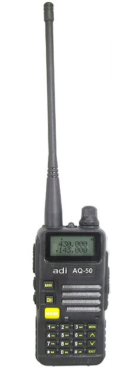
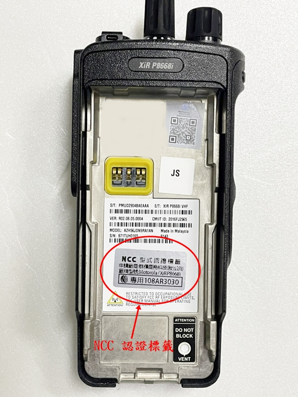

基礎無線電使用
給第一次拿起對講機的人——從開機、設定頻率、發射功率，到通聯禮節與狀況回報，一步步學會實機操作，不用先懂理論。
這門課是什麼？
很多人買了對講機，卻不知道怎麼開機、怎麼設頻率、按哪個鍵才會發話。這門課不談艱深理論，先帶你把機器拿在手上操作一遍：設定、發射、通聯、回報，全部用得到的實務動作。
學完這篇，你就能在合法頻段內正確設定機器、用正確的禮節和別人通聯，並在緊急時做出清楚的狀況回報。
認識機器、執照認證、設定頻率、發射功率、通訊要素、通報禮節、狀況回報格式。
電磁波與頻率基礎、頻帶分類、三等業餘頻段與功率、執照與考試流程。
本隊演練與通聯使用以下頻道。每組都有主頻率與備用頻率，主頻率受干擾或無法使用時，全隊改用同代號的備用頻率。
| 頻率代號 | 主頻率（MHz） | 備用（MHz） |
|---|
群組名稱：基礎無線電 Channel
加入連結：zello.me/k/jnJpX
安裝 Zello App → 掃左側 QR 或點上方連結 → 自動加入頻道（免密碼）。上課時用它模擬半雙工無線電通聯。
先認得機器上的每個部位和按鍵，後面的設定才不會手忙腳亂。下圖標出一台典型手持對講機的各部位：


| 按鍵 | 功能 |
|---|---|
| PTT（發射鍵） | Push To Talk，按住才發射訊號；放開才能聽別人說話。 |
| BAND | 切換 VHF / UHF 頻道。 |
| A / B | 調整發話／接收頻率。A 為上排主頻道，B 為下排副頻道。 |
| VFO / MR | 頻率／頻道模式切換（要先把頻道記憶起來才有作用）。 |
| SCAN | 頻道掃描，會停在有訊號的頻道上。 |
| STEP | 步進頻率，每次上／下調的間隔（2.5 / 5.0 / 6.25 / 10.0 / 12.5 / 25.0 kHz）。 |
在台灣合法使用業餘無線電，需要行動業餘無線電電台執照，而且機器必須是型式認證合格的機種。認證合格的機子，打開電池蓋後機身會貼有 NCC 型式認證貼紙。

把機器設定在以下合法頻段內的某個固定頻率：
| 頻段 | 合法範圍 |
|---|---|
| VHF | 144 – 146 MHz |
| UHF | 430 – 432 MHz |
通過 NCC 型式認證的機子，最大發射功率已固定，你能調的是最大功率以下的範圍。按下 PTT 鍵就會發射訊號——即使你沒有說話。
| 設定 | 說明 |
|---|---|
| TXP（發射功率） | 可設 High / Low 兩段準位。High 比 Low 耗電。 |
無線通訊就像面對面說話，只要以下要素齊備，雙方就有機會通上：
雙方要在相同頻率——傳送者發話的頻率，要和接收者「耳朵」聽的頻率一樣。
音量要剛好，不是越大越好。太遠聽不見，太近反而聽不清楚。
方向要對，等於「對著接收者說話」。
要用對方能理解的「語言」（同一種調變方式）。
周圍不能太吵，否則訊號被蓋過。
一次標準的發話，照這個順序做就不會亂：
- 按下發射鍵後等 1 秒再發話（避免開頭被吃掉）。
- 報出呼號 ×2，接「XXX，收到請回答」。
- 訊息要簡單明確（可以先把要講的寫下來）。
- 講完加上「OVER」，讓對方確定你發話結束、沒有漏聽。
- 講完也等 1 秒再放開發射鍵。
- 回覆方請等 3–5 秒再按發射鍵。
- 重要訊息可重複對方說的內容，確認抄收無誤。
頻帶是公共財，不被任何人擁有。所以大家遇到別人要使用，都會互相禮讓，移到其他頻率即可。
閉環溝通（Closed-loop）確保訊息有送到、有被理解。這是全課最該背起來的發話流程：
| 術語 | 意義 |
|---|---|
| Over | 我說完了，請回覆。 |
| Out | 我說完了，結束通話（不需回覆）。 |
| Say Again | 請重複一次。 |
| Roger | 了解、收到。 |
緊急時把資訊「格式化」回報，對方才能快速抄收不漏項。三套常用格式：
SALUTE — 戰術回報
| 字母 | 項目 | 意義 |
|---|---|---|
| Size | 數量 | 有多少人／目標 |
| Activity | 活動 | 正在做什麼 |
| Location | 位置 | 在哪裡 |
| Unit | 單位 | 是誰／哪個單位 |
| Time | 時間 | 何時發生 |
| Equipment | 設備 | 攜帶／使用的裝備 |
MIST — 傷患回報
| 字母 | 項目 | 意義 |
|---|---|---|
| Mechanism | 受傷機轉 | 怎麼受傷的 |
| Injury | 受傷部位 | 傷在哪 |
| Sign | 生命徵象 | 意識／呼吸／脈搏 |
| Treatment | 處置 | 已做的處置 |
METHANE — 災害回報
| 字母 | 項目 | 意義 |
|---|---|---|
| Major Incident | 重大事故 | 是否為重大事故 |
| Exact Location | 確切地點 | 精確位置 |
| Type of Incident | 事故類型 | 什麼類型的事故 |
| Hazards | 危害因素 | 現場危險 |
| Access | 可用通道 | 怎麼進出 |
| Number of Casualties | 傷患人數 | 多少傷患 |
| Emergent Service | 緊急服務 | 需要哪些支援 |
把上面的 MIST 套進真實情境，一份傷患回報長這樣：
| 項目 | 內容 |
|---|---|
| M 受傷機轉 | 男性傷患一名，受爆炸傷及槍傷。 |
| I 受傷部位 | 左大腿斷肢，右胸槍傷，大出血。 |
| T 處置 | 左大腿已綁止血帶，右胸前後貼上胸封，做過一次排氣（burping）。 |
| S 生命徵象 | 目前無意識，呼吸淺快；無頸動脈搏動、有橈動脈搏動，研判休克。 |
接著向接送單位申請後送，可用九點（九線）格式逐項報：
| 行 | 項目 | 內容（範例） |
|---|---|---|
| 1 | 後送點座標 | 我們在座標 51RTG 58374 87418，申請後送。 |
| 2 | 頻率與呼號 | 接送單位請用無線電頻道 435.015，備用 143.600；我們呼號 TANGO B。 |
| 3 | 傷患數量與狀況 | 男性一名，大出血、無意識。 |
| 4 | 需求裝備 | 擔架及血漿 3 單位。 |
| 5 | 傷勢 | 左大腿斷肢、右胸槍傷大出血，已綁止血帶、貼胸封。 |
| 6 | 接送點安全 | 接送點環境安全。 |
| 7 | 識別方式 | 會有穿黃色反光背心人員揮手識別。 |
| 8 | 國籍與安全 | 傷患國籍與安全情形。 |
| 9 | 污染程度 | 接送點生化核污染（NBC）程度。 |
考照準備篇
想考三等業餘無線電執照，這幾個基礎觀念和法規數字先記起來，考題八成都圍著它們轉。
- 無線電：又稱電波、射頻、射頻電波，指在自由空間（空氣或真空）傳播的電磁波。
- 電磁波：電磁場在空間中以「波」的形式傳遞能量；在真空中傳播速度為光速，並可按頻率從低到高分類。
電磁波依頻率高低分成這些頻帶：
| 頻帶名稱 | 頻率範圍 |
|---|---|
| 特低頻 VLF | 3 ~ 30 kHz |
| 低頻 LF | 30 ~ 300 kHz |
| 中頻 MF | 300 ~ 3000 kHz |
| 高頻 HF | 3 ~ 30 MHz |
| 特高頻 VHF | 30 ~ 300 MHz |
| 超高頻 UHF | 300 ~ 3000 MHz |
| 極高頻 SHF | 3 ~ 30 GHz |
| 頻帶 | 頻率 | 典型用途 |
|---|---|---|
| VLF / LF | 3k–300k | 航海導航、長波 |
| MF | 300k–3M | AM 廣播 |
| HF | 3M–30M | 短波、業餘遠距 |
| VHF | 30M–300M | FM 廣播、對講機 |
| UHF | 300M–3G | 電視、手機、對講機 |
| SHF / EHF | 3G–300G | 衛星、雷達 |
人員等級決定你能申請的電臺：
- 一等人員 → 可申請一等、二等或三等電臺
- 二等人員 → 可申請二等或三等電臺
- 三等人員 → 可申請三等電臺
三等業餘頻段
| 頻段 | 三等可用範圍 |
|---|
分配頻段與發射功率上限
| 分配頻段 (MHz) | 一等 | 二等 | 三等 |
|---|
資料來源：NCC《業餘無線電管理辦法》附表「業餘無線電分配頻段、發射功率及發射方式一覽表」。各等級功率與頻段以 NCC 最新公告為準。
| 項目 | 費用 | 說明 |
|---|---|---|
| 人員資格測試 | 考試 200 元 ・ 執照 500 元 | 每週一、三、五辦理，隨報隨考 |
| 行動電台審驗 | 審驗每台 100 元 ・ 執照 500 元 | 考過人員執照後，再為機器辦電台執照 |
UHF 430–440 MHz + VHF 144–145 MHz，一台涵蓋兩個常用頻段。
待機時可同時守聽兩個頻段，不漏接。
手持機常見功率，足夠一般通聯使用。
非絕對必要，但建議選認證機種較安心。
有任何操作或考照問題，歡迎在課堂或社群提出討論。
情景模擬練習
用 Zello（手機 PTT App，模擬半雙工無線電）進行訊息傳遞演練：教練推一張情境圖到 Zello 群組，學員輪流按住 PTT 用正確格式回報，再依題目「備註」對照講評。
| 規則 | 說明 |
|---|---|
| 一次一人 | 同時只有一人能發話，別人按住時你只能聽。搶話會互相蓋掉。 |
| 先按再講 | 按住 PTT 停一下再開口，講完停一下再放開，避免吃掉頭尾。 |
| 講完說 OVER | 「OVER」＝我說完請回覆；「OUT」＝結束通話。 |
| 閉環確認 | 收訊方覆誦關鍵資訊（座標、數量、頻道），確保沒聽錯。 |
題庫存在你這台裝置的瀏覽器，不會上傳網站、學員看不到。可新增／編輯／刪除／排序，按 把圖推到 Zello 群組。
新增情境
圖不上傳網站，直接從手機相簿選一張推到 Zello 群組——適合臨時或不公開的題目。